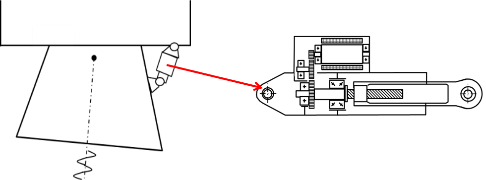

5.4. Design graph and optimization with python#
Written by Marc Budinger (INSA Toulouse), Toulouse, France
This notebook continues the example started earlier. It aims to show how a design graph can be used to structure the optimisation problem.
For interested readers, more information can be found in :
Delbecq, S., Budinger, M., Ochotorena, A., Reysset, A., & Defaÿ, F. (2020). Efficient sizing and optimization of multirotor drones based on scaling laws and similarity models. Aerospace Science and Technology, 102, 105873.
5.4.1. Objectives and specifications#
We want to optimize the selection of a TVC motor/reducer set: dynamics are high and motor inertia effect is not negligeable.

The sizing scenario is a sinusoïdal displacement with a constant force and an inertia effect:
Specification |
|
|---|---|
static force |
40 kN |
Inertia |
800 kgg |
Displacement magnitude |
10 mm |
Frequency |
5 Hz |
We first define the specifications and assumptions for the sizing:
from math import pi
# Specifications
Xmax = 10e-3 # [m]
f = 5 # [Hz]
w = 2*pi*5 # [rad/s] angular frequency
Xpmax = w*Xmax # [m/s] max linear speed
Xppmax = w**2*Xmax # [m/s²] max linear acceleration
M = 800 # [kg] Equivalent mass inertia of the nozzle
Fstat = 40e3 # [N] static force
A reference example of motor is:
Characteristics |
|
|---|---|
Nom. torque |
3.14 N.m |
Max. torque |
13.4 N.m |
Max. speed |
7200 rpm |
Inertia |
2.90E-04 kg.m² |
Mass |
3.8 kg |
We assume here that :
the pitch \(p\) of the roller screw is 10 mm/rev.
The efficiency of mechanical power transmission is 100%.
The objective is to select the reduction ratio of the gear reducer in order to minimize the mass of the motor.
We then define the main characteristics of components and the reference parameters for the scaling laws:
# Assumptions
pitch = 10e-3 / 2 / 3.14 # [m/rad]
nu_screw = 1 # [-]
# Reference motor
T_mot_nom_ref = 3.14 # [N.m] Max torque
T_mot_max_ref = 13.4 # [N.m] Rated torque
W_mot_max_ref = 754 # [rad/s] max speed
J_mot_ref = 2.9e-4 / 2 # [kg.m²] Inertie
M_mot_ref = 3.8 # [kg] Mass
5.4.2. Design graph#
The objective is to select the motor and the reduction ratio of a gear reducer in order to minimize the mass of the motor.
Exercise 5.3
Draw the design graph and highlight the main problems.
Propose a solution which reduce the complexity of the optimization problem compared to previous solution.
Define optimization variables and the set of constraints
Solution to
The design graph of this sizing problem is:
 with
with
equation
1the sizing scenario linking force and acceleration of the load to the maximal electromagnetic torque of the motor.equations
2and3scaling laws which enable to estimate inertia and mass of the motor.
The main problem is the existance of an algebraic loop. Here the choice of a motor, based on its max torque depends on its own inertia, which means we have to know what motor to chose before choosing it.
This algebraic loop can be broken by admitting that the inertia torque is meaningless to evaluate the max torque, which allows us to choose a motor.
The global torque with inertia can subsequently be evaluated and compared to the torque of the motor we selected. To respect this last constraint, we add an oversizing constraint to the first sizing process, the solver will chose by itself the value of this coefficient, which is at least 1 (in the case of negligible inertia effects).
5.4.3. Sizing code#
The sizing code is defined here in a function which can give an evaluation of the objective and of the constraints function of design variables.
def sizing_code(param, arg="print"):
# Design variables
N = param[0] # Reduction ratio of the reducer
k_mot = param[1] # oversizing coefficient
# --------------------------------------
# Load force
max_load = Fstat + M*Xppmax # [N]
# Torque approximation
# --------------------------------------
T_mot_max = k_mot * max_load / N * pitch # [N.m]
# --------------------------------------
# Parameter estimation with scaling laws
T_mot = T_mot_max/T_mot_max_ref*T_mot_max_ref
# Motor
M_mot = M_mot_ref * (T_mot / T_mot_nom_ref) ** (3 / 3.5)
J_mot = J_mot_ref * (T_mot / T_mot_nom_ref) ** (5 / 3.5)
W_mot = W_mot_max_ref * (T_mot / T_mot_nom_ref) ** (-1 / 3.5)
# --------------------------------------
# Motor torque calculation with motor inertia
T_mot_scenario = (
max_load * pitch / N / nu_screw
+ J_mot * Xppmax * N / pitch ) # [N.m] max electromagnetic torque
# --------------------------------------
# Objectives and constrants calculations
# Objective = motor mass
objective = M_mot
# Constraints (should be >=0)
C1 = W_mot - N * Xpmax / pitch # speed margin
C2 = T_mot_max - T_mot_scenario # Torque margin
# --------------------------------------
# Objective and constraints
if arg == "objective":
return objective / 100
if arg == "objectiveP":
if ((C1 < 0.0) | (C2 < 0.0)):
# If constraints are not respected we penalize
# the objective for contraint less algorithms
return objective * 1e5
else:
return objective / 100
elif arg == "print":
print("Objective:")
print(" Motor mass = %.2f kg" % M_mot)
print("Design variables:")
print(" reduction_ratio = %.2f" % N)
print(" Rated Motor torque = %.2f N.m" % T_mot)
print("Performances:")
print(" Max load = %.0f N" % max_load)
print("Components characteristics:")
print(" Motor mass = %.2f kg" % M_mot)
print(" Motor max torque = %.2f N.m" % T_mot_max)
print("Constraints (should be >= 0):")
print(" Speed margin: W_mot-reduction_ratio*max_speed/pitch= %.3f" % C1)
print(" Torque margin: T_mot_max - T_mot_scenario= %.3f " % C2)
elif arg == "constraints":
return [C1, C2]
else:
raise TypeError(
"Unknown argument for sizing_code: use 'print', 'objective', 'objectiveP' or 'contraints'"
)
5.4.4. Optimization with SLSQP algorithm#
We will now use the opmization algorithms of the Scipy package to solve and optimize the configuration. We will first use the SLSQP algorithm without explicit expression of the gradient (Jacobian).
The first step is to give an initial value of optimisation variables:
import numpy as np
# Optimization variables
# Reduction ratio
reduction_ratio_init = 5 # [-]
reduction_ratio_min = 0.1 # [-]
reduction_ratio_max = 10 # [-]
# Oversizing coefficient for multidisciplinary coupling
Tmot_nom = 2 # [-]
Tmot_nom_min = 0.33 # [-] min catalog NK Parvex motor
Tmot_nom_max = 32.8 # [-] max catalog
# Initial values vector for design variables
parameters = np.array((reduction_ratio_init, Tmot_nom))
We can print of the characterisitcs of the problem before optimization with the intitial vector of optimization variables:
# Initial characteristics before optimization
print("-----------------------------------------------")
print("Initial characteristics before optimization :")
sizing_code(parameters, "print")
print("-----------------------------------------------")
-----------------------------------------------
Initial characteristics before optimization :
Objective:
Motor mass = 26.68 kg
Design variables:
reduction_ratio = 5.00
Rated Motor torque = 30.51 N.m
Performances:
Max load = 47896 N
Components characteristics:
Motor mass = 26.68 kg
Motor max torque = 30.51 N.m
Constraints (should be >= 0):
Speed margin: W_mot-reduction_ratio*max_speed/pitch= -592.694
Torque margin: T_mot_max - T_mot_scenario= -100.428
-----------------------------------------------
We can see that constraints are not respected.
Then we can solve the problem and print of the optimized solution:
import scipy
import time
# Resolution of the problem
contrainte = lambda x: sizing_code(x, "constraints")
objectif = lambda x: sizing_code(x, "objective")
start = time.time()
result = scipy.optimize.fmin_slsqp(
func=objectif,
x0=parameters,
bounds=[
(reduction_ratio_min, reduction_ratio_max),
(Tmot_nom_min, Tmot_nom_max),
],
f_ieqcons=contrainte,
iter=1000,
acc=1e-5,
)
end = time.time()
# Final characteristics after optimization
print("-----------------------------------------------")
print("Final characteristics after optimization :")
sizing_code(result, "print")
print("-----------------------------------------------")
print("Calculation time:\n", end - start, "s")
Positive directional derivative for linesearch (Exit mode 8)
Current function value: 0.09198229837941853
Iterations: 13
Function evaluations: 59
Gradient evaluations: 9
-----------------------------------------------
Final characteristics after optimization :
Objective:
Motor mass = 9.20 kg
Design variables:
reduction_ratio = 2.86
Rated Motor torque = 8.81 N.m
Performances:
Max load = 47896 N
Components characteristics:
Motor mass = 9.20 kg
Motor max torque = 8.81 N.m
Constraints (should be >= 0):
Speed margin: W_mot-reduction_ratio*max_speed/pitch= -2.235
Torque margin: T_mot_max - T_mot_scenario= -29.089
-----------------------------------------------
Calculation time:
0.1363811492919922 s
Exercise 5.4
Compare the speed of execution of this optimization with the previous solution. This speed can be evaluated with the number of calls to the function (the sizing code).
Explain the observed discrepancy.